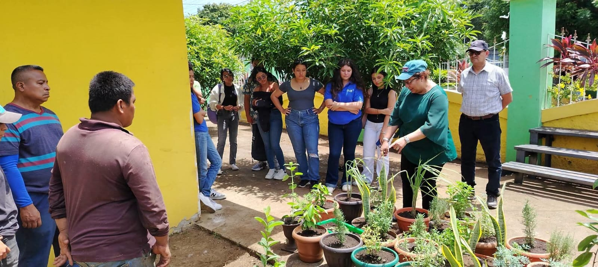
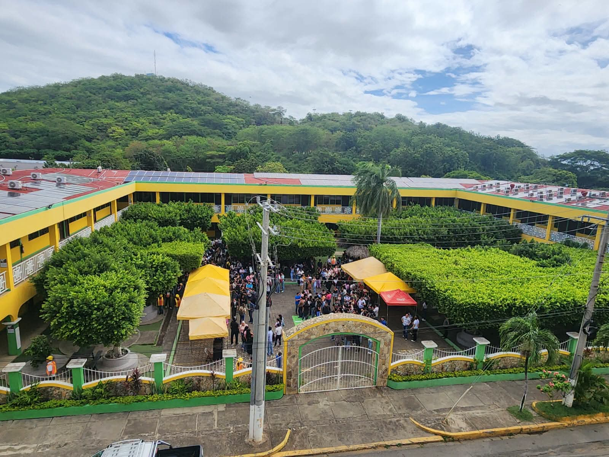
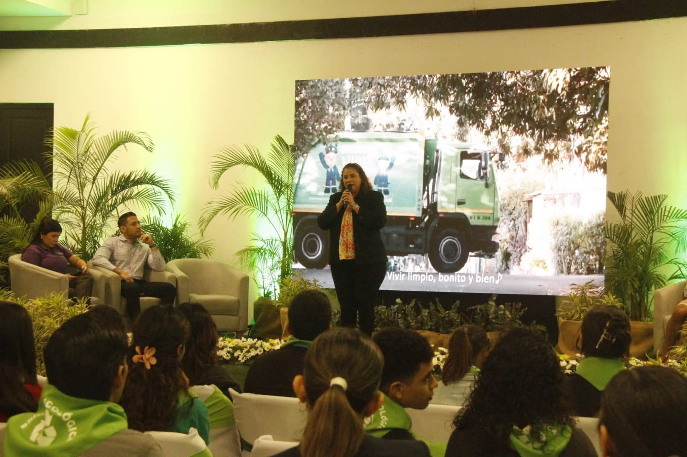
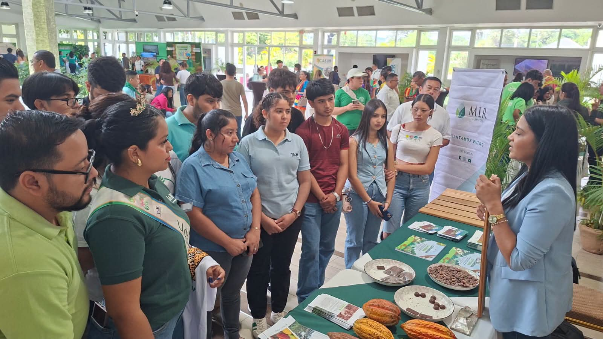
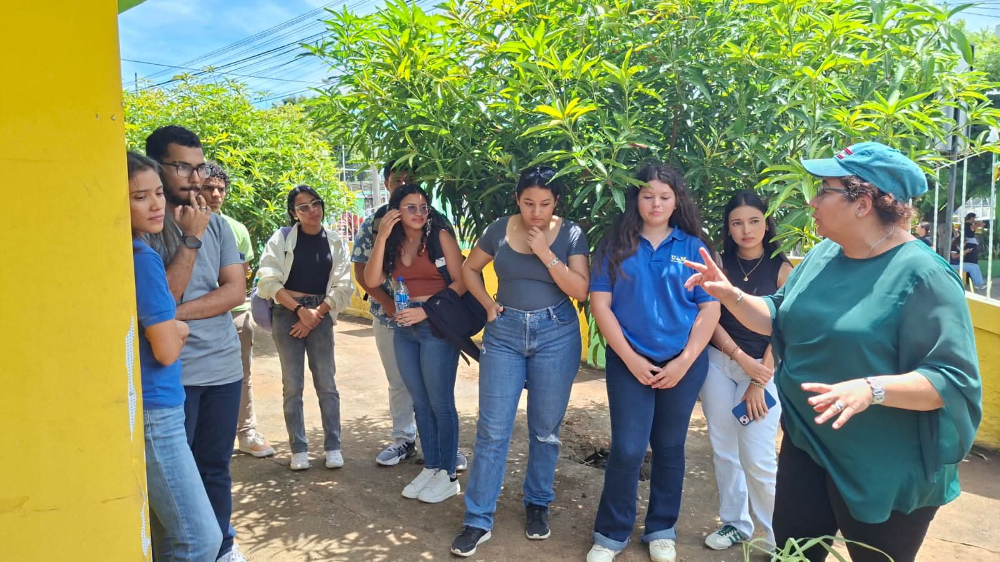
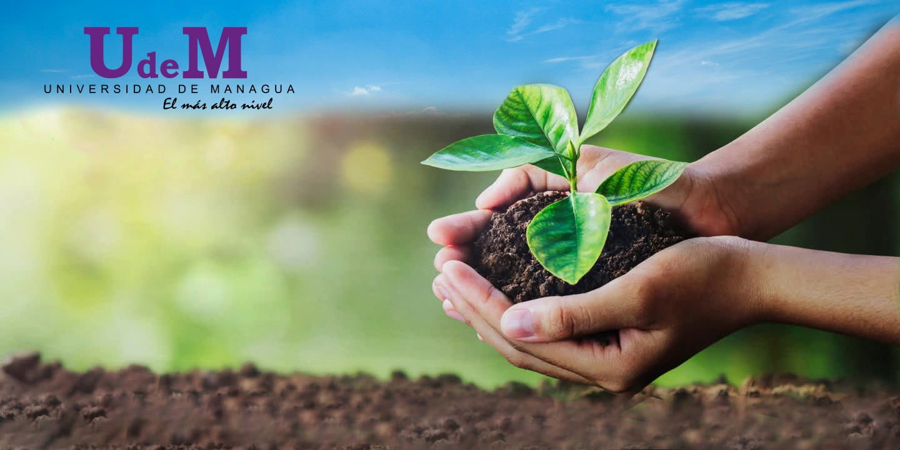

Universidad de Managua
Imagen principal proporcionada para representar el entorno institucional donde se desarrolla el proyecto Mañana Verde.
Las fotografías utilizadas en esta sección corresponden a los archivos incluidos en el material facilitado para el desarrollo del sitio web.

Imagen principal proporcionada para representar el entorno institucional donde se desarrolla el proyecto Mañana Verde.

Representación visual del espacio universitario como escenario para promover educación y compromiso ambiental.

La universidad como espacio para desarrollar iniciativas y conocimientos orientados a un futuro más sostenible.

Espacio visual relacionado con el objetivo de documentar y promover soluciones sostenibles desde las universidades.

La participación de estudiantes y docentes es fundamental para fortalecer una cultura de sostenibilidad.

Imagen utilizada para identificar visualmente el proyecto y su propósito de construir un futuro sostenible.